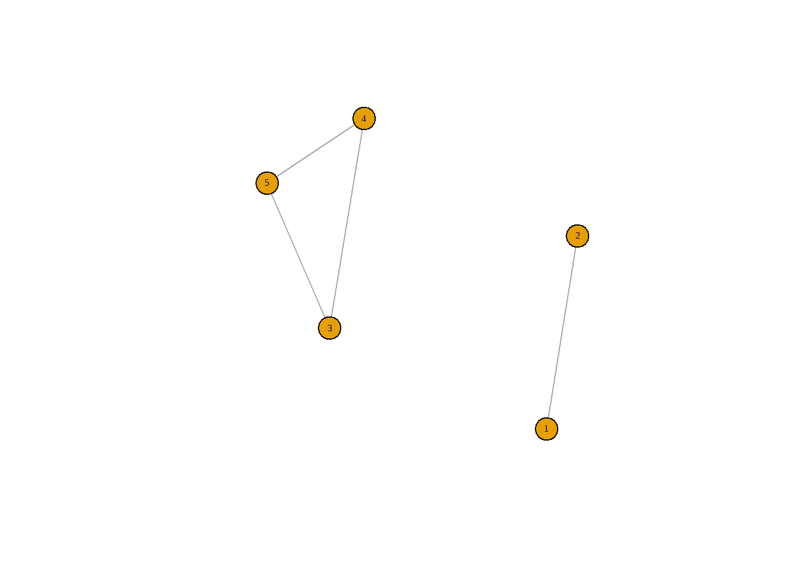

Section 7 Find group of highly correlated columns
7.1 Introduction
Here, we will explore how to find groups of highly correlated columns. Each group contains columns having a correlation higher than a fixed chosen threshold.
We will first give a simple data set, then give the code and the result we get. After all, we will explore how the code works. This example based on the question and answer that I got from stackoverflow.com. Some of the functions have been updated since the package is updated at the time I wrote this section (2022).
Besides exploring how to find groups of highly correlated numerical columns, I also do the same with (binary) nominal columns. However, since no command helps compute the correlation matrix with a numerical column, we will need to process this step slightly differently than the above example. This way can be applied if we want to find other kinds of groups of highly correlated variables, such as numeric-numeric and numeric-ordinal,…
7.2 Data set and the code to get the result
suppressPackageStartupMessages(library(tidyverse))
suppressPackageStartupMessages(library(igraph))
suppressPackageStartupMessages(library(DescTools))
suppressPackageStartupMessages(library(psych)) data1 <- structure(list(A = c(1L, 2L, 5L, 4L, 366L, 65L, 43L, 456L, 876L, 78L, 687L, 378L, 378L, 34L, 53L, 43L),
B = c(2L, 2L, 5L, 4L, 366L, 65L, 43L, 456L, 876L, 78L, 687L, 378L, 378L, 34L, 53L, 41L),
C = c(10L, 20L, 10L, 20L, 10L, 20L, 1L, 0L, 1L, 2010L,20L, 10L, 10L, 10L, 10L, 10L),
D = c(2L, 10L, 31L, 2L, 2L, 5L, 2L, 5L, 1L, 52L, 1L, 2L, 52L, 6L, 2L, 1L),
E = c(4L, 10L, 31L, 2L, 2L, 5L, 2L, 5L, 1L, 52L, 1L, 2L, 52L, 6L, 2L, 3L)),
.Names = c("A", "B", "C", "D", "E"),
class = "data.frame", row.names = c(NA,-16L))Here is the code that we can use to get the result
# Compute correlation of columns in data1 using pearson
var.corelation <- cor(as.matrix(data1), method="pearson")
# prevent duplicated pairs
var.corelation <- var.corelation*lower.tri(var.corelation)
# Filter pairs having correlation > threshold
check.corelation <- which(abs(var.corelation)>0.62, arr.ind=TRUE)
graph.cor <- graph_from_data_frame(check.corelation, directed = FALSE)
#
groups.cor <- split(unique(as.vector(check.corelation)),
clusters(graph.cor)$membership)
# Get the row name of highly correlated groups
lapply(groups.cor,FUN=function(list.cor){rownames(var.corelation)[list.cor]})## $`1`
## [1] "B" "A"
##
## $`2`
## [1] "D" "E" "C"If our data has a small number of columns, we can plot groups of highly correlated columns. The below graph gives indexed highly correlated clusters.

7.3 Explain the code in details
First, notice that our data only contains numeric columns; we can compute a correlation matrix using Pearson correlation.
## A B C D E
## A 1.0000000 0.9999978 -0.1385469 -0.1125711 -0.1242381
## B 0.9999978 1.0000000 -0.1384694 -0.1124062 -0.1240949
## C -0.1385469 -0.1384694 1.0000000 0.6212136 0.6220380
## D -0.1125711 -0.1124062 0.6212136 1.0000000 0.9992690
## E -0.1242381 -0.1240949 0.6220380 0.9992690 1.0000000Since the correlation matrix is symmetric through the diagonal and the values on the diagonal are equal to 1, we just need to keep the values in the lower diagonal.
## [,1] [,2] [,3] [,4] [,5]
## [1,] FALSE FALSE FALSE FALSE FALSE
## [2,] TRUE FALSE FALSE FALSE FALSE
## [3,] TRUE TRUE FALSE FALSE FALSE
## [4,] TRUE TRUE TRUE FALSE FALSE
## [5,] TRUE TRUE TRUE TRUE FALSEWith this example, we only filter columns with a correlation > 0.62. The result below shows us the location row and columns of highly correlated pairs. For example, The first one is (row 2, column 1) associated with (B, A) is a pair of columns having correlation > threshold, etc.
## row col
## A 1 1
## A 1 2
## B 2 2
## C 3 3
## C 3 4
## D 4 4
## C 3 5
## D 4 5
## E 5 5## IGRAPH e4e1b6a UN-- 5 4 --
## + attr: name (v/c)
## + edges from e4e1b6a (vertex names):
## [1] 2--1 4--3 5--3 4--5Now, we will consider the clusters’ membership used to split our data. From the membership, the first row is the indexes of columns, and the second row is the index of the cluster that those columns belong to. We see that column with indexes 2 and 1 (columns B and A) is in cluster 1, and columns with indexes 4, 5, and 3 (columns D, E, and C) are in cluster 2.
## $membership
## 2 4 5 1 3
## 1 2 2 1 2
##
## $csize
## [1] 2 3
##
## $no
## [1] 2So, now we split the column indexes into cluster
## [1] 2 4 5 1 3groups.cor <- split(unique(as.vector(check.corelation)),
components(graph.cor)$membership)
groups.cor## $`1`
## [1] 2 1
##
## $`2`
## [1] 4 5 3And get the column names of the columns in each cluster.
## $`1`
## [1] "B" "A"
##
## $`2`
## [1] "D" "E" "C"7.4 Deal with nominal-nominal variables
set.seed(365263)
X1 <- sample(c("A", "B"), size = 16, replace = TRUE)
X2 <- sample(c("E", "H" ), size = 16, replace = TRUE)
X3 <- sample(c("X", "Y"), size = 16, replace = TRUE)
X4 <- sample(c("L", "M"), size = 16, replace = TRUE)
X5 <- sample(c("K", "L"), size = 16, replace = TRUE)
data2 <- tibble(X1, X2, X3, X4, X5)
head(data2)## # A tibble: 6 × 5
## X1 X2 X3 X4 X5
## <chr> <chr> <chr> <chr> <chr>
## 1 B H X M L
## 2 B H Y M K
## 3 A H Y L L
## 4 B E Y L L
## 5 B E Y L L
## 6 B H X M L7.5 Here is the code to get group of highly correlated columns
## Warning: The `x` argument of `as_tibble.matrix()` must have unique column names if `.name_repair` is omitted as of tibble 2.0.0.
## Using compatibility `.name_repair`.
## This warning is displayed once every 8 hours.
## Call `lifecycle::last_lifecycle_warnings()` to see where this warning was generated.com_phi_f <-function(var1, var2){return(phi(table(var1, var2)))}
# Create a vector that contain phi corr(V1, V2) for all of pairs
nom_cor <- c()
for (i in 1:dim(pair_cols)[1]){
# get the values of the variable associated with variable
#pair_cols$V1[row==i] and pair_cols$V2[row==i]
var1 <- data2 %>% select(all_of(pair_cols$V1[i])) %>% pull
var2 <- data2 %>% select(all_of(pair_cols$V2[i])) %>% pull
nom_cor[i] = com_phi_f(var1, var2)}
# Combine the nom_cor (corrlation value column) to the pair_cols data frame
pair_cols <- cbind(pair_cols, nom_cor)
# Filter pairs having corrleation >= threshold
threshold = 0.20
pair_cols <- pair_cols %>% filter(abs(nom_cor) >= threshold)
# Connect the var_name of pairs having corr > threshold
high_cor_pair <- igraph::graph_from_data_frame(pair_cols, directed = FALSE)
#
col_cluster <- clusters(high_cor_pair)
# Create a table include cluster_index and var_name
group_var_dat <- col_cluster$membership %>%
as.matrix() %>% data.frame() %>%
rownames_to_column("var_name")%>%
rename(group_index = ".") %>%
select(group_index, var_name)
# Split the var_name based on cluster index
# Each cluster contains cluster index and variable (column) names
# of highly correlated columns in the cluster
my_cluster <- split(group_var_dat, f=group_var_dat$group_index)
my_cluster## $`1`
## group_index var_name
## 1 1 X1
## 4 1 X5
##
## $`2`
## group_index var_name
## 2 2 X2
## 3 2 X3
## 5 2 X47.6 Explain the steps in details
## # A tibble: 10 × 2
## V1 V2
## <chr> <chr>
## 1 X1 X2
## 2 X1 X3
## 3 X1 X4
## 4 X1 X5
## 5 X2 X3
## 6 X2 X4
## 7 X2 X5
## 8 X3 X4
## 9 X3 X5
## 10 X4 X5# Create a vector that contain phi corr(V1, V2) for all of pairs
nom_cor <- c()
for (i in 1:dim(pair_cols)[1]){
# get the values of the variable associated with variable
#pair_cols$V1[row==i] and pair_cols$V2[row==i]
var1 <- data2 %>% select(all_of(pair_cols$V1[i])) %>% pull
var2 <- data2 %>% select(all_of(pair_cols$V2[i])) %>% pull
nom_cor[i] = com_phi_f(var1, var2)}For doing the example, just choose a really small threshold = 0.20
## V1 V2 nom_cor
## 1 X1 X5 0.22
## 2 X2 X3 0.20
## 3 X3 X4 -0.26Now, we can create a list of highly correlated pairs using graph_from_data_frame
## IGRAPH e52429b UN-- 5 3 --
## + attr: name (v/c), nom_cor (e/n)
## + edges from e52429b (vertex names):
## [1] X1--X5 X2--X3 X3--X4## $membership
## X1 X2 X3 X5 X4
## 1 2 2 1 2
##
## $csize
## [1] 2 3
##
## $no
## [1] 2group_var_dat <- col_cluster$membership %>%
as.matrix() %>% data.frame() %>% rownames_to_column("var_name") %>% rename(group_index = ".") %>% select(group_index, var_name)
group_var_dat## group_index var_name
## 1 1 X1
## 2 2 X2
## 3 2 X3
## 4 1 X5
## 5 2 X4## $`1`
## group_index var_name
## 1 1 X1
## 4 1 X5
##
## $`2`
## group_index var_name
## 2 2 X2
## 3 2 X3
## 5 2 X4